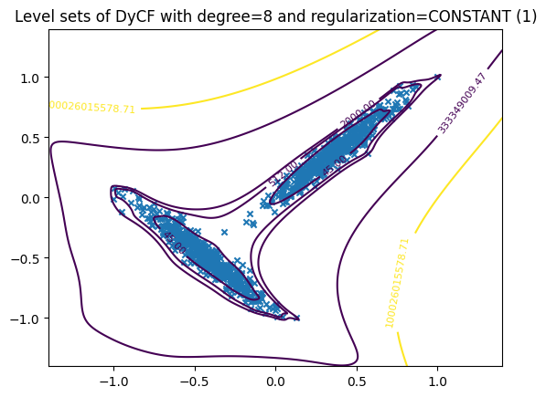
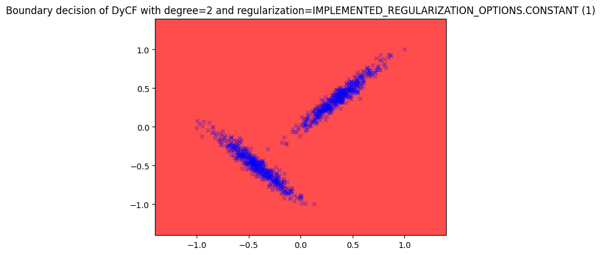
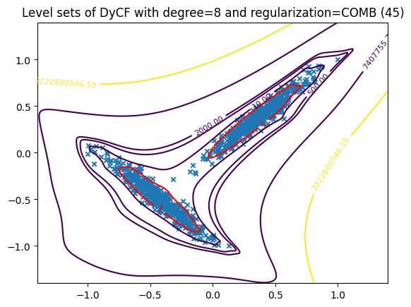
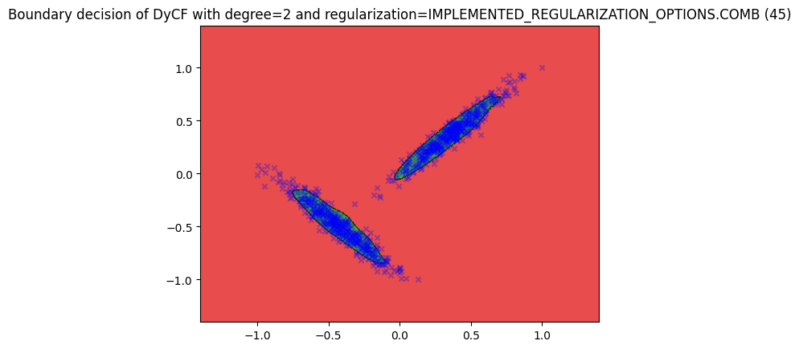
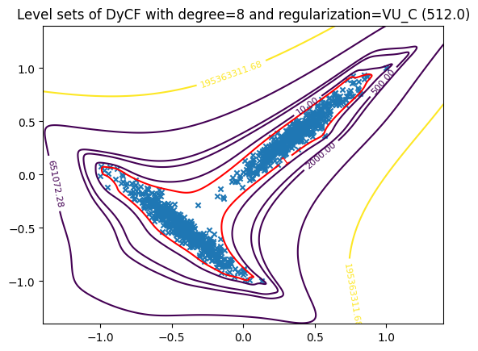
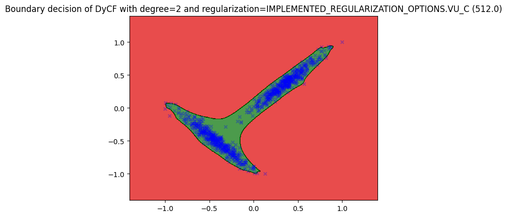

Plot Levelset Example#
Imports#
import numpy as np
from cristal import DyCF, DyCFPlotter, IMPLEMENTED_REGULARIZATION_OPTIONS
from cristal.utils.data import make_T_rotated
Parameters#
d = 2 # Data dimension
n = 8 # Degree of the polynomial basis
N = 1000 # Number of samples
Data#
data = make_T_rotated(N)
Without regularization for DyCF#
Show the Christoffel function level sets
Fit the Christoffel function#
dycf = DyCF(n, IMPLEMENTED_REGULARIZATION_OPTIONS.CONSTANT)
dycf.fit(data)
<cristal.christoffel.DyCF at 0x7ffaf8405be0>
Plot the level set#
plotter = DyCFPlotter(dycf)
plotter.levelset(data, n_x1=500, n_x2=500, levels=[45, 512, 2000], percentiles=[50, 75])
# n_x1 and n_x2 control the resolution of the grid for plotting
# You can adjust the levels and percentiles as needed
# More information can be found in the odds_optimized.plotter.LevelsetPlotter.plot documentation

Plot the boundary decision#
Only outliers because the regularization is not set.
plotter.boundary(data, n_x1=500, n_x2=500)

Using “comb” regularization for DyCF#
“comb” regularization means that the level set of DyCF at 1 is equivalent to the level set of the Christoffel function at $\begin{pmatrix}n+d \ d\end{pmatrix}$, where d is the number of features and n is the degree of the polynomial.
Fit the Christoffel function#
dycf_comb = DyCF(n, IMPLEMENTED_REGULARIZATION_OPTIONS.COMB)
dycf_comb.fit(data)
<cristal.christoffel.DyCF at 0x7ffaa426b250>
Plot the level set#
plotter_comb = DyCFPlotter(dycf_comb)
plotter_comb.levelset(data, n_x1=500, n_x2=500, levels=[10, 500, 2000], percentiles=[50, 75])
# n_x1 and n_x2 control the resolution of the grid for plotting
# You can adjust the levels and percentiles as needed
# More information can be found in the odds_optimized.plotter.LevelsetPlotter.plot documentation

Plot the boundary decision#
plotter_comb.boundary(data, n_x1=500, n_x2=500)

Using “vu_C” regularization for DyCF#
“vu_C” regularization means that the level set of DyCF at 1 is equivalent to the level set of the Christoffel function at $\mathbf{\frac{n^{3d/2}}{C}}$, where d is the number of features and n is the degree of the polynomial.
Fit the Christoffel function#
dycf_vu_C = DyCF(n, regularization=IMPLEMENTED_REGULARIZATION_OPTIONS.VU_C)
dycf_vu_C.fit(data)
<cristal.christoffel.DyCF at 0x7ffaa9fb47d0>
Plot the level set#
plotter_vu_C = DyCFPlotter(dycf_vu_C)
plotter_vu_C.levelset(data, n_x1=500, n_x2=500, levels=[10, 500, 2000], percentiles=[50, 75])
# n_x1 and n_x2 control the resolution of the grid for plotting
# You can adjust the levels and percentiles as needed
# More information can be found in the odds_optimized.plotter.LevelsetPlotter.plot documentation

Plot the boundary decision#
plotter_vu_C.boundary(data, n_x1=500, n_x2=500)
